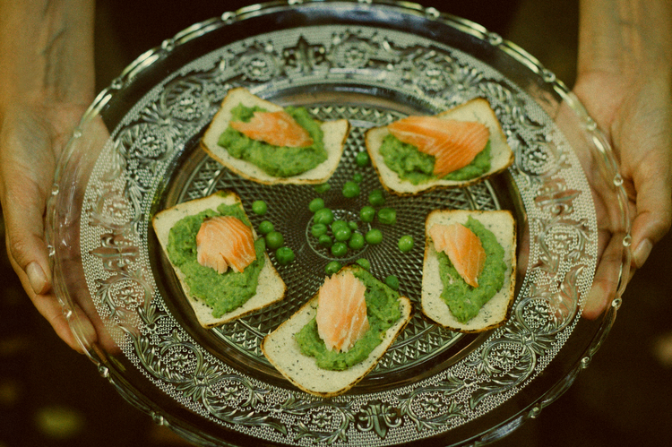

Nossas Raízes
Através do poder dos ingredientes reais da natureza, somos inspirados a transformá-los à mão em alimentos inovadores e sustentáveis, tanto em diversas comunidades de pequenos agricultores em nossa terra como em nossa casa comum, o Planeta. Nós nos esforçamos todos os dias para criar um mundo Tika que nos ajude a viver uma vida mais consciente e conectada, através de alimentos mais saudáveis, autênticos e criativos. É isso que nos leva a continuar trabalhando com grande paixão nesta grande aventura ...
Nossa Missão
Nossa missão é sempre continuar criando novas surpresas na indústria de lanches, que alegrarão muitas reuniões familiares, celebrações entre amigos e lanches para nossos filhos. Continuaremos essa jornada iniciada, sempre usando ingredientes naturais e ansiosos para fazer o nosso melhor. Todos os nossos produtos são feitos à mão.
Produtos
Clique e conheça todos os nossos produtos
Tortika Quinoa
+ Sesamo Tostado
Tika Cereal Salvaje
Avena - Quinoa
Tika Stixs
Hilo
Tika Vegan Rice Crackers
Amapolas & Sesamo
Tika Mini Rice Pop
Chocolate Berries
Tika Mini Rice Pop
Chocolate Avellanas
Conecte-se conosco através de nossas mídias sociais. E seja o primeiro a saber quando algo acontece


Recetikas
Clique e conheça todos as nossas receitas

DIPS: Blanca Patagonia
2 limões, gengibre ralado, iogurte natural, abacate em cubos.

DIPS: Cherry Christmas
Tomate Cereja, Queijo Azul, Páprica, Azeitonas, Azeite, Sal e Pimenta.
- 
MASTIKA: Bolachas com Purê de Ervilhas, Hortelã e Salmão
Ervilhas, hortelã, bolachas Tika, sal, pimenta e azeite.
DIPS: Hummus de verão
2 Limão, 1 Abacate, Coentro, Merkén, 500grs de Grão de Bico, Sal, Pimenta e Azeite.